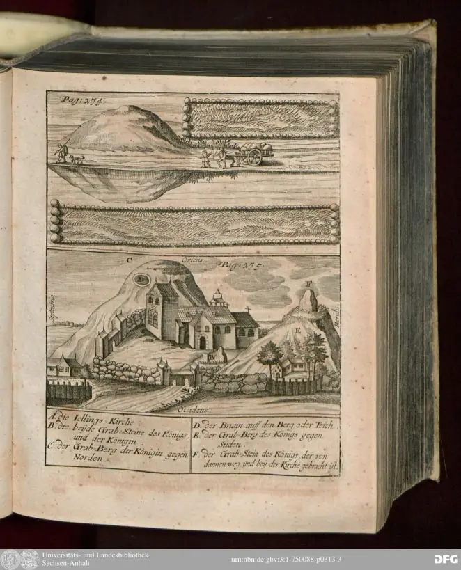

15.01.2022
Jütland - die (nochmalige) Überarbeitung der Webseite zu den beiden Runensteinen in der Kirche von 73 Sønder Vissing habe ich heute online gestellt.
11.01.2022
Im Fernsehkanal "ZDF Info" kann der 44-minütige Beitrag "Das Geheimnis des Wikingergrabs - Aufgedeckt Rätsel der Geschichte" wieder - aktuell noch bis 31.03.2022 - abgerufen werden. Darin wird über das im November 2012 entdeckte Reitergrab von Fregerslev in Jütland berichtet. Die unter der regen Anteilnahme der Bevölkerung durchgeführte Ausgrabung der zweiteiligen Grabkammer fand zwischen dem 19.04. und dem 11.05.2017 unter der Leitung der Archäologin Merethe Schifter Bagge vom Museum Skanderborg statt.
Außerdem wurde schon am 11.06.2021 durch Merethe Schifter Bagge vom Museum Skanderborg und von Anne Pedersen vom Nationalmuseum in Kopenhagen das Buch "Horse and Rider in the late Viking Age. Equestrian burial in perspective. Papers from a conference Skanderborg 27-28th of June 2019", 312 pages, ill., Aarhus University Press, 349,95 DKr, vorgestellt. Das Inhaltsverzeichnis kann hier online eingesehen werden. Aus Deutschland dürfte die Bestellung über den Anbieter "AntikMakler" am günstigsten sein - 54,00 plus 3,98 Versand.
09./10./11./12.01.2022
Inzwischen bin ich mit den überarbeiteten Webseiten in der Rubrik Jütland bei G Århus (Museum im Keller der Nordea Bank - Originalbefund) und H Århus (Moesgård Museum mit mehreren Runensteinen u.a.) angekommen. Da im Moesgård Museum etliche Runensteine aufgestellt sind, zu denen ich bislang nur spärliche Infos veröffentlicht hatte, wird es sicher einige Tage dauern, bis ich dieses Projekt abgeschlossen habe. Für den ersten Runenstein Århus 1 habe ich bereits mehrere Stunden an Recherchen, Studium der einschlägigen Literatur (Übersetzungen DK-D), Aufbereitung der Daten usw. aufbringen müssen!
Nun habe ich die Ausarbeitungen zu den weiteren Runensteinen abschließen und online stellen können.
05.01.2022
Über die interessanten Recherchen zur Person Laurits Albert Winstrup (*28.01.1815 - 04.04.1889, dänischer Architekt und königlicher Bauinspektor) in Verbindung mit seiner Zeichnung des Runensteins von Sjelle habe ich den Runenstein von 95 Fjenneslev auf Seeland außer der Reihe überarbeitet, da dieser Herr die älteste mir bekannte Aufzeichnung zu dieser Inschrift in seinem Skizzenbuch von 1841 aufgenommen hat (S. 40 in der pdf-Datei). Beide Aufzeichnungen haben sich in der Dänischen Kunstbibliothek in Kopenhagen erhalten und können heutzutage dankenswerterweise über deren Internetauftritt als Digitalisate abgerufen werden.
03.01.2022
Bei meinen Recherchen zum Runenstein von Sjelle stieß ich die Tage erstmals auf die Person Laurits Albert Winstrup (*28.01.1815 - 04.04.1889, dänischer Architekt und königlicher Bauinspektor), der den Runenstein laut Jacobsen/Moltke "Danmarks Runeindskrifter, Nr. 62" im Jahre 1866 gezeichnet hat. Über eine Mail Anfrage an die Königlich Dänische Bibliothek/Dänische Kunstbibliothek bekam ich freundlicherweise umgehend diesen Link geschickt, über den man die bereits digitalisierte Zeichnung einfach abrufen kann - http://kunstbib.dk/samlinger/arkitekturtegninger. Die Zeichnung habe ich auf meiner Webseite zu Sjelle auch direkt eingestellt.
30.12.2021
Da der Runenstein von Sjelle seine erste Erwähnung bereits im Jahre 1591 fand, war die nun eingestellte Ausarbeitung zu diesem Runenstein doch einigermaßen zeitaufwändig, aber es ist vollbracht.
27.12.2021
Jütland - die Überarbeitung der Webseiten zu den Runensteinen in/bei den Kirchen von 68 Rimsø, 69 Kolind, 70 Hammel und 71 Sporup habe ich heute einstellen können.
13.12.2021
Troels Arnkiel (Geburtsdatum nicht bekannt - aber getauft am 28.04.1638 - 07.09.1712, lutherischer Pastor und Altertumsforscher) - auf diesen Namen stieß ich die Tage erstmals beim Studium von "Danmarks Runeindskrifter, Jacobsen/Moltke, 1942, Text" im Zusammenhang mit dem Runenstein von Hovslund, zu dem ich noch einige Änderungen vorgenommen habe. Jetzt bin ich doch schon fast 40 Jahre mit der Thematik befasst, aber den Namen "Troels Arnkiel" hatte ich wirklich noch nie gehört!
Auf einfachsten wird man wohl über die Webseite https://www.arnkiel-park.de/name/ mit Informationen zu dieser Person versorgt, zumal der Wikipedia Eintrag auch nicht viel hergibt. Da gibt es nämlich ca. 8 km südlich von Flensburg den "Magister Troels Arnkiel Park", ein archäologisch-landeskundlicher Park - Auszug aus der Webseite: "Im Ortsteil Munkwolstrup der Gemeinde Oeversee liegt ein ca. 2 ha großes Parkgelände, das sich etwa zu gleichen Teilen nördlich und südlich des Munkwolstruper Weges erstreckt. Hier können sieben imposante Großsteingrab-Anlagen aus der Jungsteinzeit (4.200 1.700 v. Chr.) besichtigt werden, drei im nördlichen Gelände und vier im südlichen Gelände. Eine besondere Attraktion stellt das rekonstruierte, 70 m lange Großsteingrab (Langbett) unmittelbar am Eingang zur südlichen Parkfläche dar. Es ist bis heute eines der größten rekonstruierten Objekte dieser Art in Nordeuropa." Sicherlich ein Besuch wert!
Das hat ja nun aber nichts mit meinen dänischen Wikingern zu tun. Aber im Jahr 1703 erschien von Troels Arnkiel ein 4-bändiges Werk, das den Titel "Der Uhralten Mitternächtischen Völcker Leben, Thaten und Bekehrung" trägt. Dankenswerter Weise ist dieses frühe Werk als Digitalisat - Halle, Saale : Universitäts- und Landesbibliothek Sachsen-Anhalt, 2017 - verfügbar. Auf dem zweiten Titelblatt wird quasi ein Inhaltsverzeichnis zu den vier Teilen dargestellt. Insbesondere im Theil 3 - Cimbrische Heyden Begräbnisse finden sich zahlreiche Informationen zu einigen dänischen Runeninschriften, Ausführungen zu den dänischen Königen Gorm und Harald Blauzahn in Jelling usw. - unterlegt mit etlichen Kupferstichen. Auf der S. 275 (S. 313 in der Online Aufbereitung) - unterhalb einer Darstellung der Munkwolstruper Großsteingräber LA 28 und LA 29 - findet sich die unten eingestellte Ansicht der Jelling Monumente, ähnlich dem Rantzau Prospekt von 1591 aus "Lindeberg, Peter: Commentarii rerum memorabilium in Europa ab anno octuagesimo usque ad presentem nonagesimum primum gestarum". Dort findet sich auf den Doppelseiten 76/77 die erste bildliche Darstellung der Jelling Monumente.
Diese zeichnerische Wiedergabe der Jelling Monumente bei Troels Arnkiel hatte ich bislang auch noch nie gesehen!

Uniform Resource Name (URN): urn:nbn:de:gbv:3:1-750088-p0313-3Weitere für mich brauchbare Details seiner Arbeit muss ich jetzt erst einmal durch das Studium dieses in deutscher Sprache verfassten Werkes herausarbeiten.
01.12.2021
Jütland - die Überarbeitung der Webseite zum Runenstein in der Kirche von Laurbjerg habe ich heute einstellen können.
19.11.2021
Bildsteine auf Gotland - Auch wenn das Thema nichts mit Dänemark zu tun hat, möchte ich hier heute einige Links zu der Thematik einstellen, da ich diese einzigartigen Bildsteine total faszinierend finde.
Dr. Sigmund Oehrl ist aktuell wohl der Fachmann auf dem Gebiet schlechthin und von ihm findet man auch diese tollen Videos im Internet:
Bildsteine auf Gotland - Gesamtübersicht zu den acht u.a. Filmen (Oktober bis Dezember 2015).
Gotland - Die einzigartige Insel - Episode 1 - 4:51 Minuten
Die Edda hilft - Episode 2 - 7:03 Minuten
Probleme der Bildsteinforschung - Episode 3 - 7:10 Minuten
Wikinger digital - Episode 4 - 6:39 Minuten
Der Drachentöter - Episode 5 - 5:20 Minuten
Gunnar in der Schlangengrube - Episode 6 - 4:29 Minuten
Das Schlüsselstück - Episode 7 - 5:59 Minuten
Das Generalinterview mit Dr. Sigmund Oehrl - Episode 8 - 18:18 Minuten
Ein weiteres gut erklärendes Video (23.52 Minuten in englischer Sprache) auf Vimeo
Einige dieser bebilderten Steine, die über mindestens sieben Jahrhunderte auf der Ostseeinsel errichtet wurden, also von der Völkerwanderungszeit bis zum Ende der Wikingerzeit, stehen noch heute in der Landschaft. Viele sind aber in Stockholm (Historiska Museet) und Visby/Gotland (Gotlands Fornsal) zu bewundern - und eingelagert in deren Depot.
Literaturhinweise - eine kleine Auswahl:
Das deutschsprachige Standardwerk - noch heute: Sune Lindqvist, Gotlands Bildsteine, Band 1 und 2, Stockholm, 1941/42
Die Bildsteine Gotlands Probleme und neue Wege ihrer Dokumentation, Lesung und Deutung. Studia archaeologiae medii aevi 3, 2019, 2 Bände - Sigmund Oehrl
Documenting and Interpreting the Picture Stones of Gotland: Old Problems and New Approaches - Sigmund Oehrl
Re-Interpretations of Gotlandic Picture Stones Based on the Reflectance Transformation Imaging Method (RTI): Some Examples - Sigmund Oehrl
Wieland der Schmied auf dem Kistenstein von Alskog kyrka und dem Runenstein Ardre kyrka III. Zur partiellen Neulesung und Interpretation zweier gotländischer Bildsteine - Sigmund Oehrl
Bildliche Darstellungen vom Schmied Wieland und ein unerwarteter Auftritt in Walhall - Sigmund Oehrl
Der göttliche Schiffsbegleiter mit dem 'Hörnerhelm'. Ein bislang unbekanntes wikingerzeitliches Bildsteinfragment aus St. Valle im Kirchspiel Rute auf Gotland - Sigmund Oehrl
Wirkmächtige Kommunikationsmedien. Menschenbilder der Vendel- und Wikingerzeit und ihre Kontexte - Michaela Helmbrecht
GOTLANDS PICTURE STONES - Bearers of an Enigmatic Legacy (Einleitung / Inhaltsverzeichnis) - Gotländskt Arkiv 2012 - online zu erwerben in der Museumsbutik (ca. 10 plus 15 Versand) - Aufsätze darin z.B.:
Saga Motifs on Gotland Picture Stones: The Case of Hildr Högnadóttir - Aðalheiður Guðmundsdóttir
New Iconographic Interpretations of Gotlandic Picture Stones Based on Surface Re-Analysis - Sigmund Oehrl
Archaeological Excavations of Picture Stone Sites - Alexander Andreeff, S. 129-144 plus Literaturverzeichnis S. 203-212
17.11.2021
Jütland - Zahlreiche neue Infos, die ich erst die Tage auf verschiedenen Wegen erhalten habe, wurden von mir in die Webseiten von 9-Læborg und 82-Sønder Vilstrup eingearbeitet.
13.11.2021
Über den Newsletter des ROMU (Roskilde Museum) wurde ich heute auf die historische Serie Gåden om Danmarks første konge (Das Rätsel um Dänemarks ersten König) im dänischen TV Sender DR2 aufmerksam. In fünf ca. 28-minütigen Folgen kann man die Historikerin Cecilie Nielsen auf ihrer Suche nach Dänemarks erstem König begleiten. Dabei lässt sie die führenden Wissenschaftler auf dem Gebiet in Dänemark zu Wort kommen und wird von diesen auf ihrer Spurensuche zu den historischen Stätten (Jelling, Trelleborg, Læborg, Ladby, Danewerk, Lejre u.a.) begleitet. Da die Serie natürlich in dänischer Sprache gesendet wird, ist es nicht so einfach überhaupt etwas zu verstehen, aber die Bilder sind es - vor allem auch wegen der Drohnenaufnahmen - allemal wert angesehen zu werden.
Ebenfalls heute wurde ich auf diese Information aufmerksam: Die Reiss-Engelhorn-Museen in Mannheim widmen sich in einer umfassenden kulturhistorischen Ausstellung - 18.09.2022 bis 26.02.2023 - zum ersten Mal im deutschsprachigen Raum der faszinierenden Geschichte der Normannen. Die Ausstellung wird zudem im Sommer 2023 in der Normandie, in Rouen und Caen eine zweite Station haben.
Dazu gibt es im Verlag Schnell + Steiner bereits im Herbst 2021 den Essayband (Wissenschaftliche Aufsätze) - Normannische Verflechtungen zwischen Skandinavien und dem Mittelmeer. Der Katalog der ca. 350 Exponate beschreibt kommt dann erst im Herbst 2022 raus (24 x 28 cm, 528 Seiten, zahlreiche Abbildungen). Beide zusammen im Set kosten laut Verlag 49,95 - jeder Band für sich dagegen 29,95 .
09.11.2021
Jütland - Zu den anhand der numerischen Reihenfolge ab jetzt nachfolgenden Örtlichkeiten hatte ich in der jüngeren Vergangenheit teilweise bereits etliche Ergänzungen eingestellt. Von daher sollte es nun zügiger vorangehen.
Los geht`s ab der Nummer 56 - Bjerring, dann Vejerslev, Sønder Vinge und Ulstrup. Bei meinen Recherchen fiel mir am 06.11.2021 auf, dass in der Dänischen Runendatenbank die Leserichtung des Vejerslev Steins entgegen der tatsächlichen angegeben war. Deren Ansprechpartner, Michael Lerche-Nielsen, hat das auf meinen Hinweis hin bestätigt und umgehend korrigiert. :-)
04.11.2021
Jütland - die ebenfalls umfangreiche Überarbeitung der Seite zu den zwei Runensteinen bei der Kirche von Skjern kann ich euch heute präsentieren. Außerdem habe ich die Seite zu Hjermind nochmals überarbeitet. Da gab es doch noch etliches an Informationen und Zeichnungen nachzutragen. Aber jetzt sollte nach ausführlichem Studium aller mir zugänglichen Quellen eigentlich alles tatsächlich relevante angeführt sein.
02.11.2021
Jütland - die aufwändig gestaltete Überarbeitung der Webseite zu den vier Runensteinen bei der Kirche von Ålum habe ich heute einstellen können.
30.10.2021
Jütland - die neu gefasste Ausarbeitung zum Runenstein von Asmild habe ich heute eingestellt.
27.10.2021
Quasi zur Abwechslung von den zahlreichen Überarbeitungen der einzelnen Runensteine usw. kam ich heute auf die Idee Verlinkungen zu den einzelnen Akteuren einzufügen. Darüber sieht man dann auch - ohne weiter recherchieren zu müssen - wie ein Ole Worm, ein Søren Abildgaard, ein Erik Pontoppidan, ein Rasmus Henrik Kruse, ein Carl Christian Rafn, ein P.G. Thorsen , ein Ludv. F. A. Wimmer, ein Magnus Petersen usw. einmal aussah. Meist habe ich auf Fotos dieser Personen zurückgegriffen, die in der digitalen Sammlung der Königlichen Bibliothek in Kopenhagen online abrufbar sind. Zu dem ein oder anderen fand sich aber im Internet kein Foto, so z.B. zu Erik Moltke, auf das ich hätte verlinken können.
23.10.2021
Jütland - heute konnte ich in der Rubrik Jütland wieder einige Überarbeitungen vornehmen und darüber die Runensteine von Borup, Øster Bjerregrav und Grensten mit den aktuellsten Infos / Fotos einstellen. Insbesondere bei dem Runenstein von Grensten fand ich im Internet eine Vielzahl von Informationen / Abbildungen, von denen ich zuvor teils auch noch nichts wusste. In meinem Fundus konnte ich zu den beiden Runensteinen von Øster Bjerregrav einige meiner ersten Fotografien von Runensteinen aus dem Sommer 1983 ausgraben und per Scan digitalisieren.
21.10.2021
Jütland - die letzten Tage habe ich mich an die Aufarbeitung der fünf Runensteine im Museum in Randers (F) gemacht, die ich heute abschließen und einstellen konnte. Vorher waren es immer nur wenige Zeilen zu den einzelnen Runensteinen, jetzt kämen komplett betrachtet als Ausdruck in WORD immerhin 30 DIN A 4 Seiten zusammen!
18.10.2021
Jütland - heute konnte ich in der Rubrik Jütland einige Überarbeitungen vornehmen und darüber die Runensteine von Svenstrup, Dalbyover, Spentrup und Lem mit den aktuellsten Infos / Fotos einstellen.
15.10.2021
Jütland - heute konnte ich in der Rubrik Jütland die Nr. 44 Vester Tørslev ausarbeiten und mit den aktuellsten Infos / Fotos einstellen.
13.10.2021
Jütland - die neu gefasste Ausarbeitung zum Runenstein von Glenstrup 2 habe ich heute eingestellt.
05.10.2021
Jütland - die überarbeitete Seite zum Runenstein Hobro 2 habe ich heute eingestellt. Auch hier kam über die digitalen Quellen im Internet und weitere Informationen eine umfassende Aufarbeitung zusammen. Ergänzen möchte ich sie die Tage aber auch noch um Infos zu dem verschundenen Runenstein Hobro 1.
04.10.2021
Jütland - die überarbeitete Seite zu Klejtrup habe ich heute eingestellt. Darüber kann man nachlesen, dass es nicht nur bei uns zuviel Bürokratie gibt, sondern auch bei unseren nördlichen Nachbarn.
02.10.2021
Über den e-Mail Newsletter des Moesgaard Museums in Aarhus für Oktober 2021 wurde ich erstmals darauf aufmerksam, dass drei dänische Archäologen unter Federführung von Andreas S. Dobat am 1. Oktober den renommierten Erik Westerby-Preis in Höhe von 100.000 Kronen zugesprochen bekamen. Die Auszeichnung ist der größte Preis für Archäologie in Dänemark und wird den drei Archäologen für ihre Pionierarbeit mit der DIME-Datenbank verliehen. Die Datenbank enthält aktuell 121.227 Metalldetektorfunde und erregt als eines der weltweit größten Citizen-Science-Projekte internationale Aufmerksamkeit. Über die Datenbank kann z.B. über eine Dänemark Karte nach Regionen, Zeitabschnitten usw. nach Funden gesucht werden, die dann mit Bild und Detailinformationen zu Größe, Gewicht usw. aufgelistet sind. Mit Citizen Science werden Methoden und Fachgebiete der Wissenschaft bezeichnet, bei denen Forschungsprojekte unter Mithilfe von oder komplett durch interessierte Laien durchgeführt werden. Sie formulieren Forschungsfragen, recherchieren, melden Beobachtungen, führen Messungen durch, publizieren oder werten Daten aus. Eine Ausarbeitung der Entwickler in englischer Sprache zur Entstehung der Datenbank findet sich hier. Gratulation!
01.10.2021
Jütland - die überarbeitete Seite zu Durup (Nørager) habe ich heute eingestellt.
28.09.2021
Jütland - die mittlerweile von mir zusammengetragenen Informationen zum Runenstein von Kongens Tisted habe ich heute Abend aufbereitet und eingestellt.
26.09.2021
Jütland - die überarbeitete Ausführung zu Ravnkilde habe ich heute eingestellt. Aus den bisher wenigen Zeilen wurde auch hier eine umfassende, reich bebilderte Ausarbeitung über die im Internet zusammengetragenen Informationen.